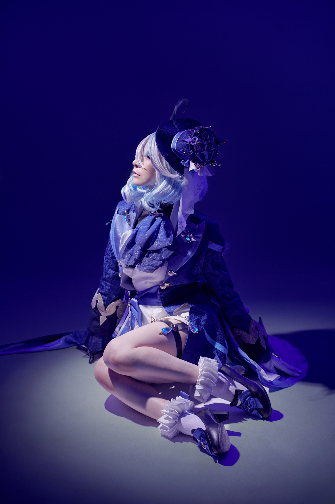

Genshin: Furina

Genshin: Furina *m:@srtm_sp, *p:@AK_camera
NIKKE: Viper / Jackal
NIKKE: Viper / Jackal *m:@nuninuni22, @aisapon, *p:@AK_camera
Genshin impact: House of the Hearth
House of the Hearth *m:@miyako_ao1, @macaro_ningen, @yuilnohanashi, @Kino_Yukigami, *p:@AK_camera
StarRail: Silver Wolf
Silver Wolf *m:@nuninuni22 *p:@AK_camera
Genshin : Shenhe
Shenhe *m:@nuninuni22 *p:@AK_camera
StarRail: Silver Wolf
Silver Wolf *m:@nuninuni22 *p:@AK_camera
Cyno
Cyno *m:@macaro_ningen *p:@AK_camera
Traveler: Hotaru
Traveler: Hotaru *m:@cm_anz *p:@AK_camera
Yaemiko
Yaemiko *m:@miyako_ao1 *p:@AK_camera
Genshin impact Kokomi
Kokomi *m:@disney3harry1 *p:@AK_camera